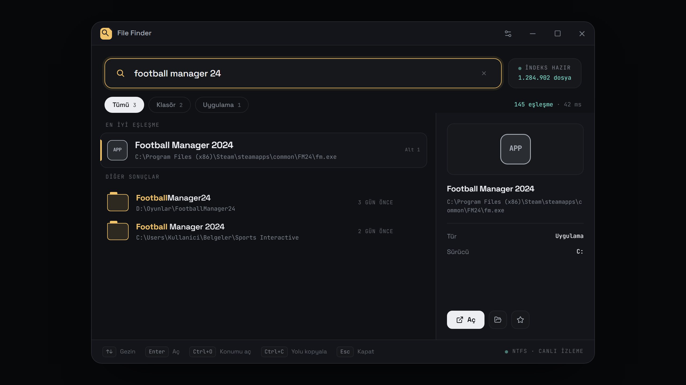
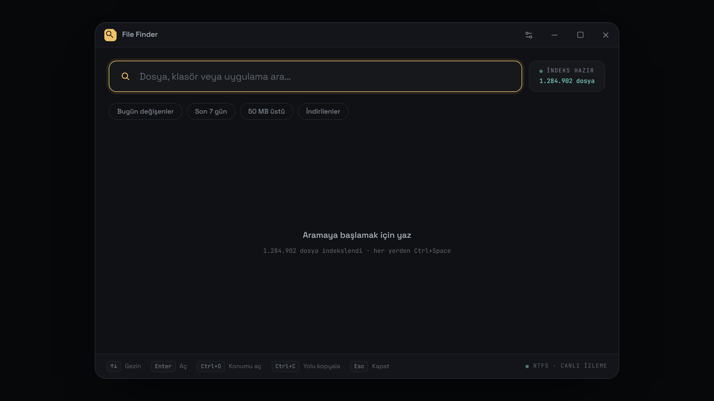
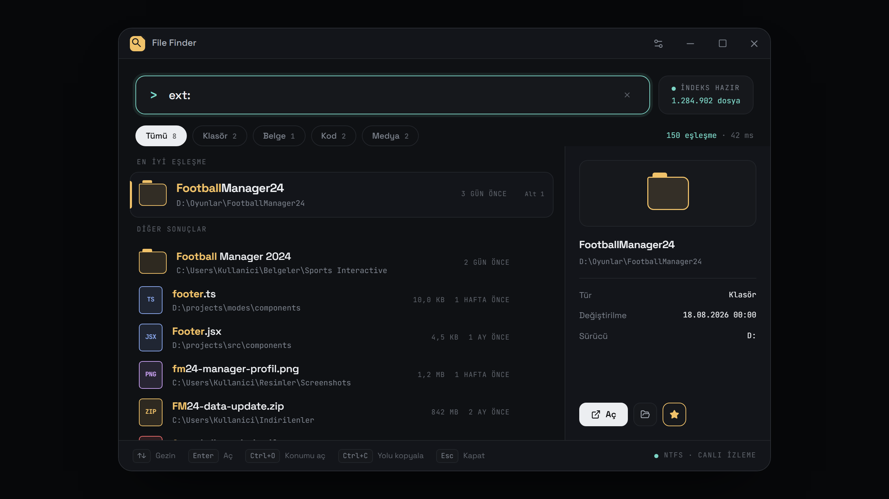
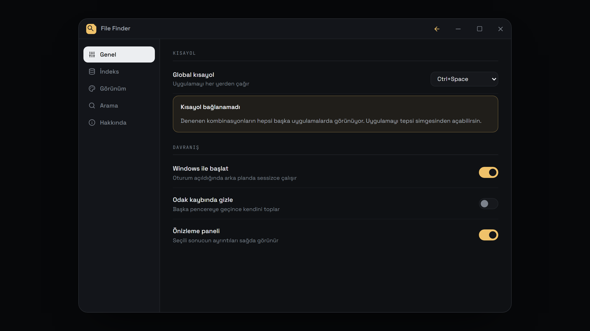
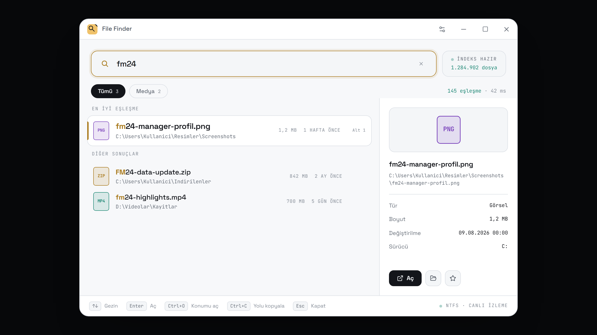

File Finder, NTFS'in kendi kayıt defterini okuyup kendi indeksini tutar. Milyonlarca dosya arasından aradığını saniyenin altında bulur — diske değil, indekse sorar.
Ctrl + Space — her yerden çağır

Windows Arama dosya sisteminde gezinir. File Finder gezinmez — NTFS'in ana dosya tablosunu (MFT) bir kez okur, sonra USN Journal'ı dinleyerek indeksi güncel tutar.
5 milyon dosyalık indekste tipik arama 0,8 saniyenin altında. Sonuçlar sen yazarken güncellenir.
Tam eşleşme, baştan eşleşme, kısa isim sırasıyla. "footer" yazınca alfabenin başındaki dosyalar değil, gerçekten aradığın gelir.
football manager 24 yazınca FootballManager24 klasörünü bulur. Kelimeler ayrı ayrı eşleşir.
Başlat menüsü ve kayıtlı programlar da aramaya girer. Ayrı bir başlatıcıya gerek kalmaz.
Arka plan servisi USN Journal'ı dinler. Yeni oluşturduğun dosya anında indekse girer.
Aç, konumunu aç, yolu kopyala, yönetici olarak çalıştır, geri dönüşüme gönder — hepsi kısayolla.
Gerçek bir indeks üzerinde, 4.980.150 kayıtla alınan sayılar.
Son sürümde arama yolu yeniden yazıldı: ek filtre yokken sorgu yalnız
(id, name) çekiyor. İsim indeksi bunu tek başına
karşıladığı için SQLite 3 GB'lık tabloya hiç inmiyor — arama başına
14,9 saniyeden 0,76 saniyeye düştü.
Karanlık ve açık tema; sistem temasını da izleyebilir.




Her şey klavyeden. Fare isteğe bağlı.
| Ctrl Space | uygulamayı çağır |
| ↑ ↓ | sonuçlar arasında gezin |
| Enter | aç |
| Ctrl Shift Enter | yönetici olarak çalıştır |
| Ctrl O | dosya konumunu aç |
| Ctrl C | yolu kopyala |
| Alt 1..9 | n. sonucu aç |
| Del | geri dönüşüme gönder |
| Esc | temizle, sonra gizle |
ext:pdf | uzantıya göre |
size:>1gb | boyut eşiği |
size:100kb-5mb | boyut aralığı |
modified:today | bugün değişenler |
modified:<7d | son 7 gün |
created:2026-01-01.. | oluşturma aralığı |
path:C:\Projeler | klasör altında |
/^rapor-\d+/ | düzenli ifade |
Filtreler birleşir. Yalnız filtre yazmak da geçerli bir aramadır — o durumda sonuçlar en son değişene göre sıralanır.
Kurulum dosyasını indirip çalıştır. Windows kırmızı bir uyarı gösterecek — neden gösterdiği ve ne yapman gerektiği aşağıda.
İlk çalıştırmada SmartScreen kırmızı bir pencere açıp Yayımcı: Bilinmeyen yayımcı diyor. Bu, dosyada kötü bir şey bulunduğu anlamına gelmiyor — Windows'un söylediği şey, dosyanın kimin olduğunu doğrulayamadığı.
Kurulum paketi kod imzalama sertifikasıyla imzalanmamış. Sertifika, yayıncının kimliğini doğrulayan ücretli bir hizmet; yıllık maliyeti kişisel bir projeye ayrılabilecek bütçenin üstünde. İmzasız her programda — kim yazmış olursa olsun — aynı ekran çıkar.
Tam olarak değil. Standart bir sertifikayla uyarı, yeterli sayıda kişi indirip çalıştırana kadar bir süre daha devam eder; ilk günden susturan EV sertifikalar belirgin şekilde daha pahalı. Yani imza, uyarıyı anında kapatan bir düğme değil.
Uyarıda Ek bilgi → Yine de çalıştır. Güvenmiyorsan bu tamamen makul — kaynak kodun tamamı bu depoda açık, aşağıdaki adımlarla kendin derleyip kendi ürettiğin dosyayı çalıştırabilirsin. Kendi derlediğin dosyada bu uyarı hiç çıkmaz.
Bu uyarıyı “önemsiz, geç” diye sunmak istemiyorum: tanımadığın bir yerden indirdiğin imzasız bir programı çalıştırmadan önce duraksamak doğru bir alışkanlık. Burada verebileceğim tek gerçek güvence kaynağın açık olması ve sürümlerin Releases sayfasındaki dosyalarla aynı derlemeden çıkması.
# PowerShell'i yönetici olarak aç
sc.exe create FileFinderService `
binPath= "$env:LOCALAPPDATA\File Finder\file-finder-service.exe" `
start= auto
sc.exe start FileFinderService
Servis çalışmazsa uygulama yedek tarama moduna düşer: arama yine çalışır, ama indeks canlı güncellenmez.
git clone https://github.com/berkdemir18/File-Finder.git
cd File-Finder
npm --prefix file-finder-ui install
# servis önce derlenir, tauri onu kaynak olarak paketler
cargo build --release -p file-finder-service
cp target/release/file-finder-service.exe file-finder-ui/src-tauri/
npx --prefix file-finder-ui tauri build
Gerekenler: Rust 1.77+, Node 18+, Windows SDK (ikonu exe'ye gömen
rc.exe için) ve WebView2 Runtime.